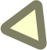
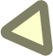

Boi
Gril

Something about the gender binary and
how you may not subscribe to it.
Something about the gender binary and
how you may not subscribe to it.

 



Something about a spectrum or a quadrant,
breaking boundaries and the possibilities.


An inspirational paragraph about self discovery and the journey of becoming the person you want to be blah blah blah, ask kim_
An inspirational paragraph about self discovery and the journey of becoming the person you want to be blah blah blah, ask kim_